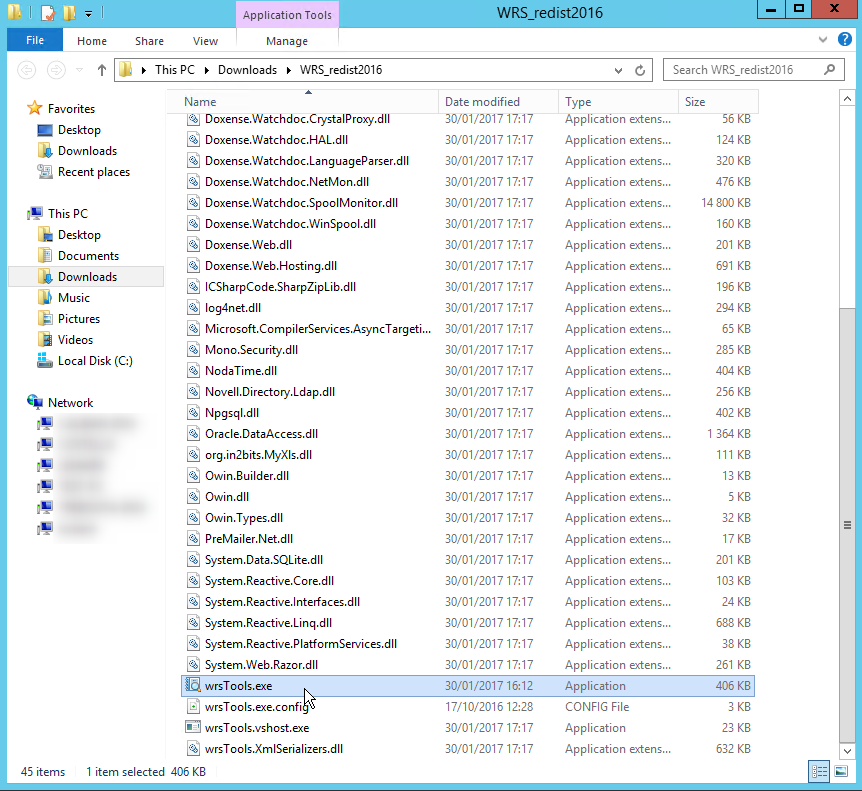
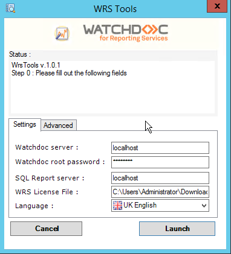
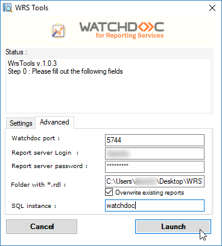
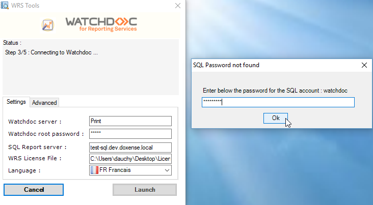
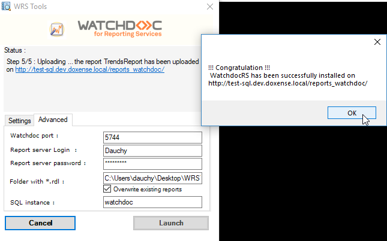
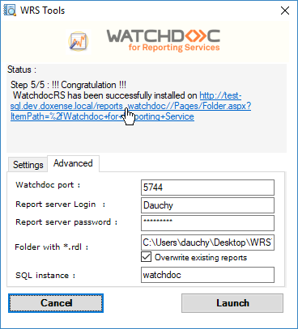
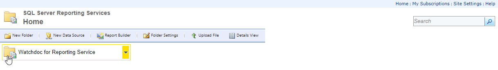
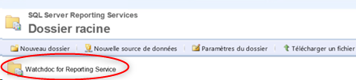
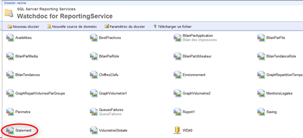

A partir de MS SQL® 2012 R2 , il est possible de déployer automatiquement les rapports WRS à l'aide de l'utilitaire WRSTools.exe mis à votre disposition dans le package d'installation.
Accéder à l'outil WRSTOOLS.exe
Pour installer automatiquement WRS :
-
depuis Connect, téléchargez le package d'installation WRS ;
-
enregistrez le dossier d'archive sur votre serveur ;
-
décompressez l'archive après voir vérifié qu'elle n'était pas bloquée ;
-
parmi les fichiers de l'archive, repérez le fichier WRSTools.exe.

Installer automatiquement WRS®
Pour installer WRS® à l'aide de WRSTools :
-
dans le dossier d'archive contenant le package d’installation WRS, cliquez sur le fichier WRSTools.exe ;
-
vous accédez à l'interface d'installation WRS Tools constituée de deux onglets :
-
Settings ;
-
Advanced :

-
-
sous l'onglet Settings, complétez les champs suivants :
-
Watchdoc server : indiquez le nom de votre server Watchdoc (Nom NETBIOS ou adresse IP) ;
-
Watchdoc root password : indiquez le mot de passe de maintenance Watchdoc ;
-
SQL Report server : indiquez le nom (NETBIOS ou adresse IP) de votre serveur SQL ;
-
WRS Licence File : indiquez le chemin d'accès à la licence Watchdoc for Reporting Services. Fourni par Doxense, ce fichier porte l'extension .wlk ;
-
Language : dans la liste, sélectionnez la langue de l'interface WRS :
-
-
Sous l'onglet Advanced, remplissez les champs suivants :
-
Watchdoc Port : s'il ne s'agit pas du port par défaut 5744, indiquez le numéro de port utilisé pour accéder à Watchdoc ;
-
Report server Login* : indiquez le nom d’utilisateur ajouté dans les droits Reporting Services (cf. partie précédente) ;
-
Report server password* : indiquez le mot de passe du compte utilisé (droits Reporting Services nécessaires) ;
-
Folder with *.rdl : indiquez dans ce champ l’emplacement du dossier comportant les fichiers .rdl (Reports, par défaut) ;
-
SQL Instance : indiquez le nom de l'instance installée propre à Watchdoc (Watchdoc, par défaut) ;

-
-
Une fois les paramètres remplis et vérifiés, cliquez sur le bouton Launch ( pour exécuter WRS ;
-
Dans la boîte SQL Password not found saisissez le mot de passe du compte administrant l'instance SQL indiquée précédemment sous l'onglet Advanced, puis cliquez sur le bouton OK :

→ un message vous informe que l'installation d WRS est terminée :

-
Cliquez sur le lien URL affiché pour accéder à l'interface SQL Server Reporting Services :


Déployer les rapports WRS
Dans le gestionnaire de rapports SQL Server Reporting Services, un dossier Watchdoc for Reporting Service s'affiche :

-
Parmi les fichiers contenus dans ce dossier, cliquez sur l'entrée Statement pour accéder au rapport :
